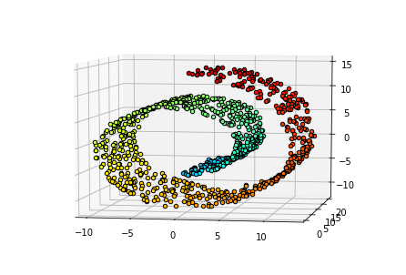

Методы снижения размерности разрабатывались с тридцатых годов прошлого века. Первые алгоритмы (PCA, классический вариант MDS) были линейными, а потому сохраняли глобальные особенности структуры данных. Тем не менее, на практике часто бывает важным сохранить локальные особенности, что привело к активному развитию нелинейных методов.
Одной из задач, решаемых с помощью понижения размерности, является визуализация данных. Её суть заключается в в проецировании исходных данных на пространство размерности не выше трёх и последующем изображении векторов в этом пространстве. Эта задача имеет две особенности. Во-первых, качественная визуализация должна быть понятной и доносить до наблюдателя релевантную информацию.Во-вторых, не ясно, как оценивать качество визуализации, ведь критерии “хорошей картинки” могут варьироваться от задачи к задаче.
В этом обзоре мы рассмотрим некоторые методы понижения размерности и их применение для визуализации данных, а также примеры метрик для сравнения их качества.
Основная идея состоит в том, чтобы отобразить точки из исходного признакового пространства в пространство меньшей размерности таким образом, чтобы попарное расстояние между точками в новом пространстве было как можно более близко к расстоянию между ними в исходном пространстве. Расстояния задаются матрицей расхождений \(D = \{d_{i, j}\}_{i, j = 1}^N\), а векторы нового пространства \(x_1 \ldots x_N\) подбираются путём минимизации функции стресса: \[ \text{Stress}_D(x_1, \ldots x_N) = \left( \sum_{i \ne j = 1\ldots N} (d_{i, j} - ||x_i - x_j||)^2 \right)^{1/2}. \] В настоящее время существует достаточно много модификаций метода.
Графовый метод для работы с нелинейными многообразиями, алгоритм которого состоит из трёх шагов:
Ещё один нелинейный метод, созданный для сохранения как глобальных, так и локальных структрур данных. Алгоритм состоит из трёх шагов:
Метод предложен как модификация метода SNE, идея которого заключается в преобразовании расстояний между точками в исходном пространстве в условные вероятности, которые отражали бы меру сходства между этими точками: \[ p_{j | i} = \dfrac{\exp(-||x_i - x_j||^2 / 2\sigma^2_i)}{\sum_{k \ne i}\exp(-||x_i-x_k||^2/2\sigma_i^2)}. \] Аналогично меру сходства \(q_{j | i}\) можно определить и в пространстве меньшей размерности. Векторы нового пространства подбираются минимизацией KL-дивергенции: \[ \text{Loss} = \sum_i KL(P_i || Q_i) = \sum_i \sum_j p_{j | i} \log \dfrac{p_{j | i}}{q_{j | i}}. \] Тем не менее, данную функцию потерь достаточно сложно оптимизировать из-за наличия экспонент, а также так называемой “проблемы столпотворения”. t-SNE решает эти проблемы заменой нормального распределения в новом пространстве на \(t_1\)-распределение. Основным гиперпараметром является перплексия.
Метод предложен в 2018 году и на данный момент является одним из самых популярных. Алгоритм состоит из трёх шагов:
Метод предложен в 2020 году для визуализации больших наборов данных, для которых важно сохранить локальные связи между объектами. Такие наборы часто встречаются в биологии и ядерной физике. Алогритм состоит из четырёх шагов.
Все перечисленные ниже метрики используют коранговую матрицу \(Q\) и основаны на идее о том, что качественная визуализация должна сохранять окрестности точек.
Набор данных представляет собой точки из нормального распределения на двумерной плоскости, переведённые в трёхмерное пространство некоторым гладким преобразованием.

Try posterdown out! Hopefully you like it!